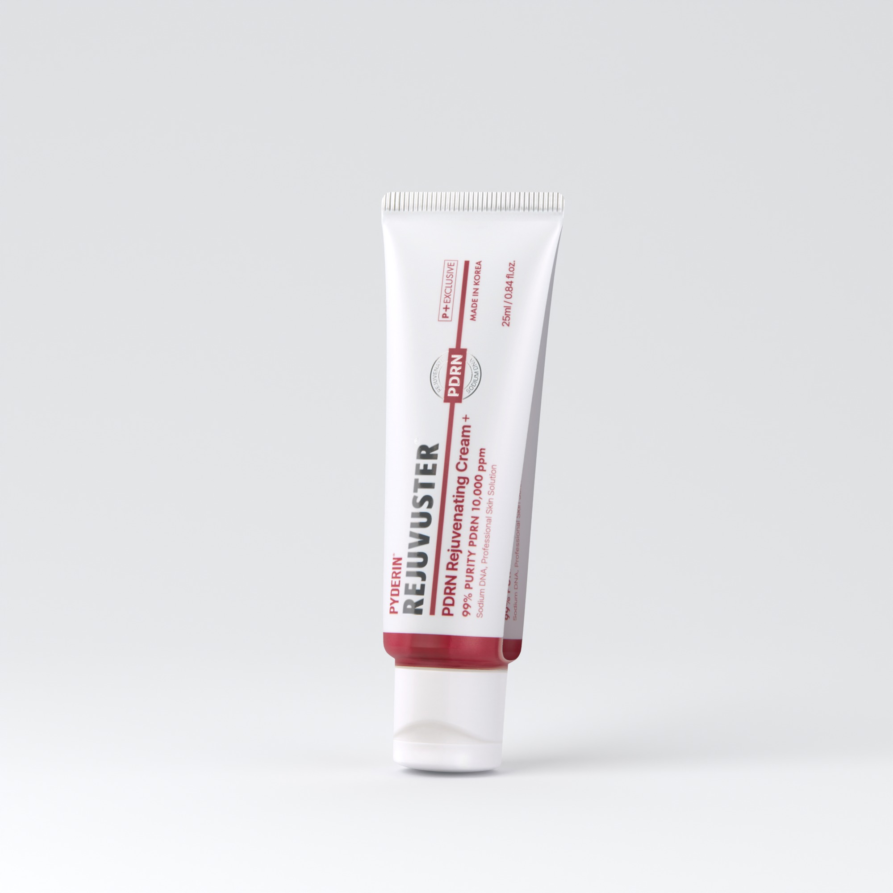

Skin-cell tests versus negative control, 24 hours, at an accredited Korean institute. Not measured on skin.

How to use Apply after the previous step has absorbed. Use for at least two months. Contains niacinamide; use sunscreen during the period of use.
Shop nowRecommended through professional consultation, based on each customer's skin condition.